i18-coordinated-representations · b5fe1f4dfd871db74d6b15a167a7398ef363ea62 · macOS · collaborative preview · Chromium 152 · 1280 × 800 CSS pixels · Moxi Python reference scatter renderer + browser DOM · Four synthetic specimen readings and four route-owned transit stops
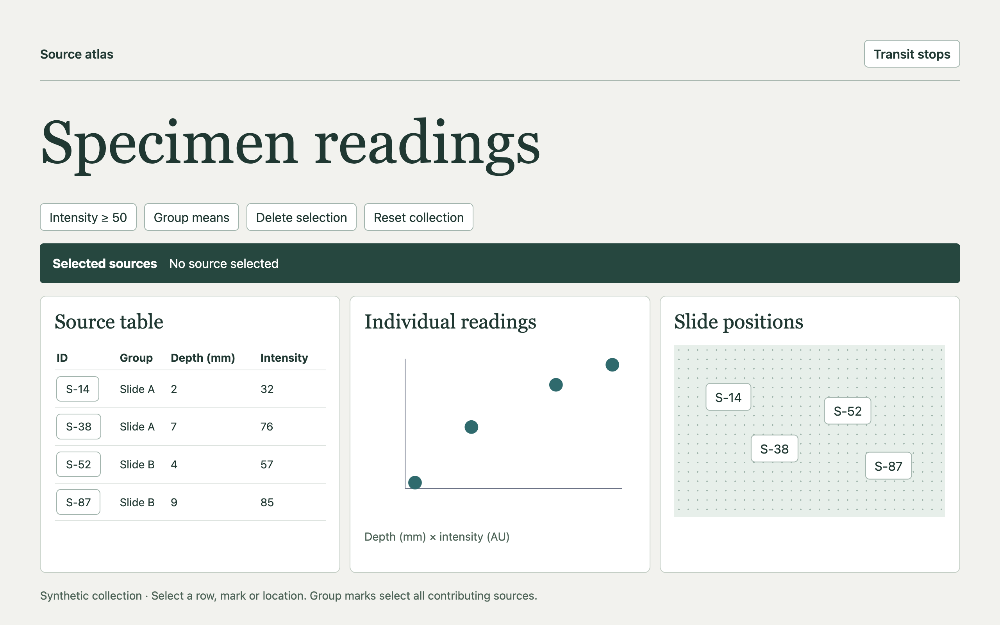
Open the specimen collection Action: Open the specimen collection Expected: Four readings appear in each view.
initial · browser · 2560 × 1600 pixels
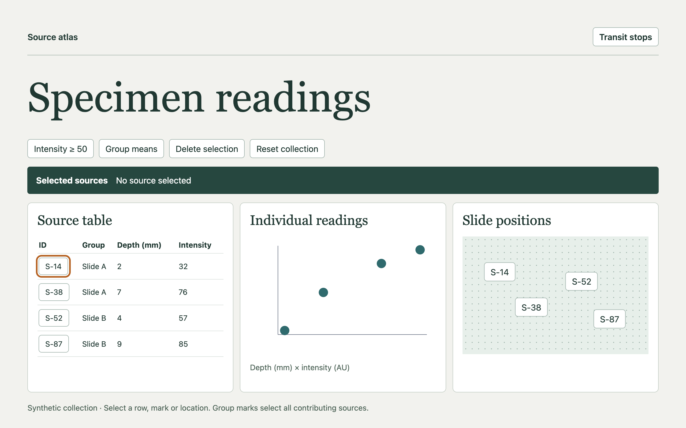
Tab to the first source Action: Tab to the first source Expected: S-14 has keyboard focus in the source table.
interaction · browser · 2560 × 1600 pixels
Press Enter on S-14 Action: Press Enter on S-14 Expected: S-14 is selected in the table, scatter plot and slide canvas.
result · browser · 2560 × 1600 pixels
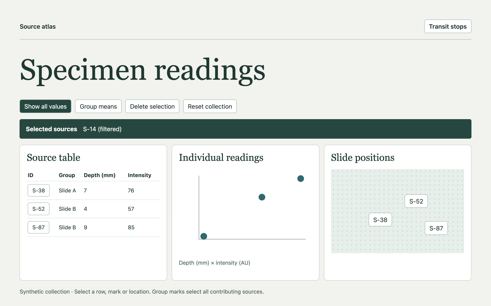
Filter to intensity ≥ 50 Action: Filter to intensity ≥ 50 Expected: S-14 is retained as filtered while its three marks disappear.
result · browser · 2560 × 1600 pixels
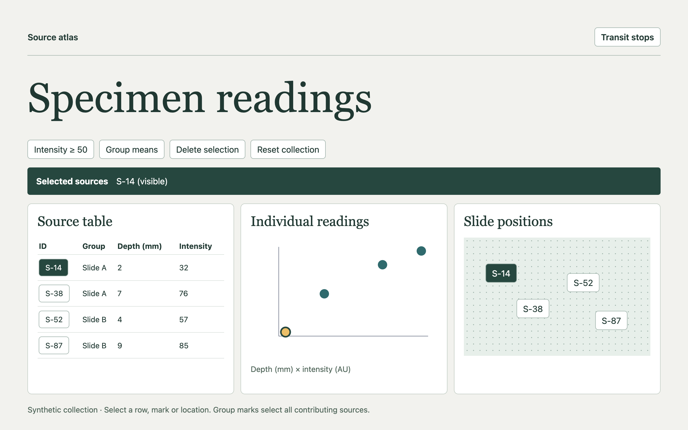
Show all values Action: Show all values Expected: S-14 reappears selected in all three views.
recovery · browser · 2560 × 1600 pixels
Switch to group means Action: Switch to group means Expected: Two mean marks represent four readings; the first includes S-14.
interaction · browser · 2560 × 1600 pixels
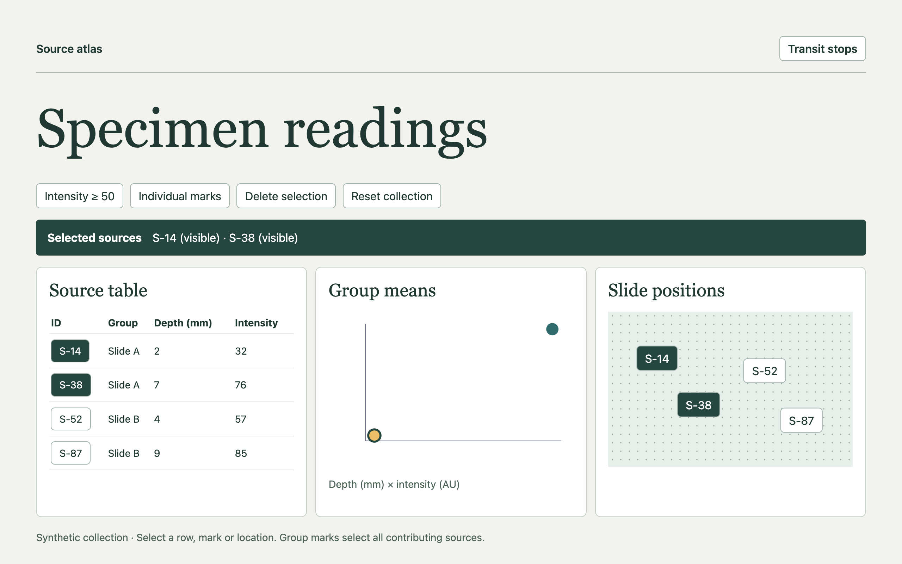
Select the first mean mark Action: Select the first mean mark Expected: Both contributing sources, S-14 and S-38, are selected.
result · browser · 2560 × 1600 pixels
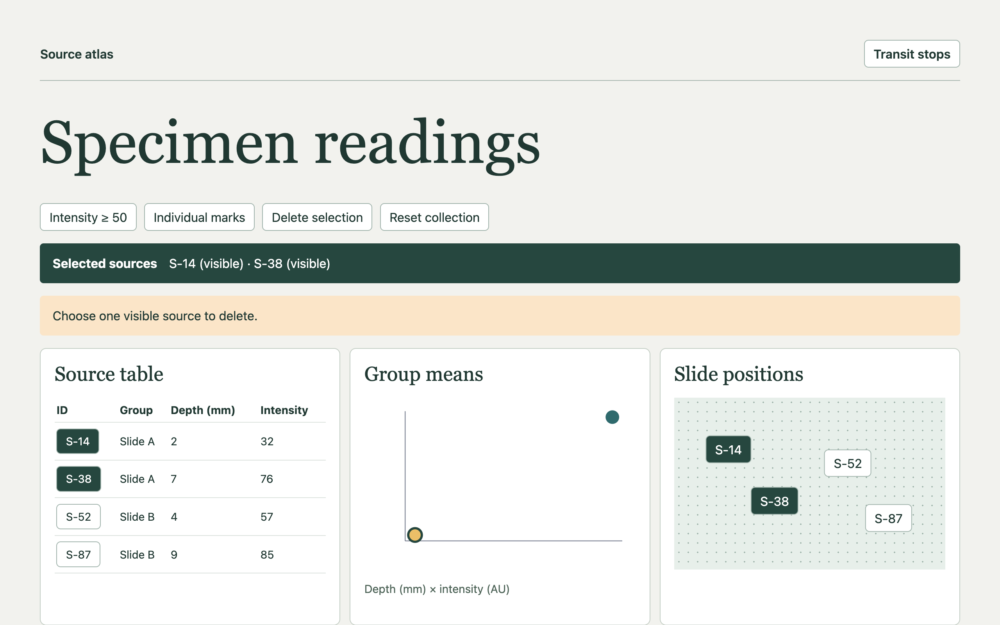
Try deleting the aggregate selection Action: Try deleting the aggregate selection Expected: The view explains that deletion requires one visible source.
recovery · browser · 2560 × 1600 pixels
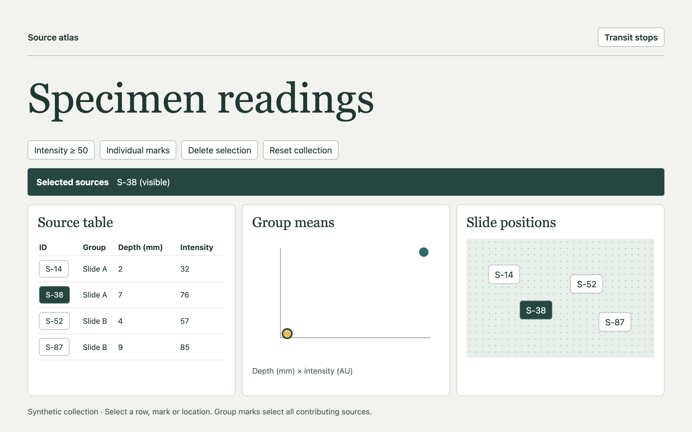
Select S-38 on the slide canvas Action: Select S-38 on the slide canvas Expected: Only S-38 is selected; its group mean is highlighted.
interaction · browser · 2560 × 1600 pixels
Delete S-38 Action: Delete S-38 Expected: The S-38 reference reads deleted. Slide A now contains S-14 alone.
result · browser · 2560 × 1600 pixels
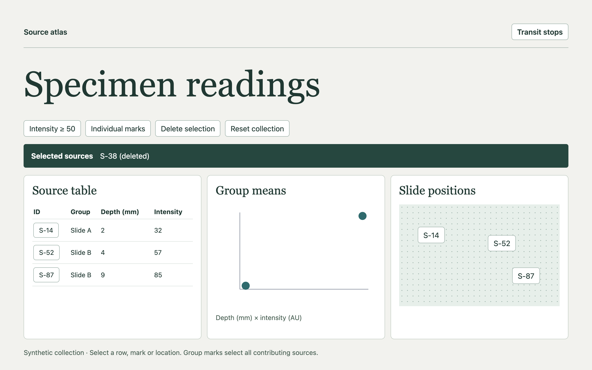
Reload the snapshot URL Action: Reload the snapshot URL Expected: The deletion and its source reference survive reload.
result · browser · 2560 × 1600 pixels
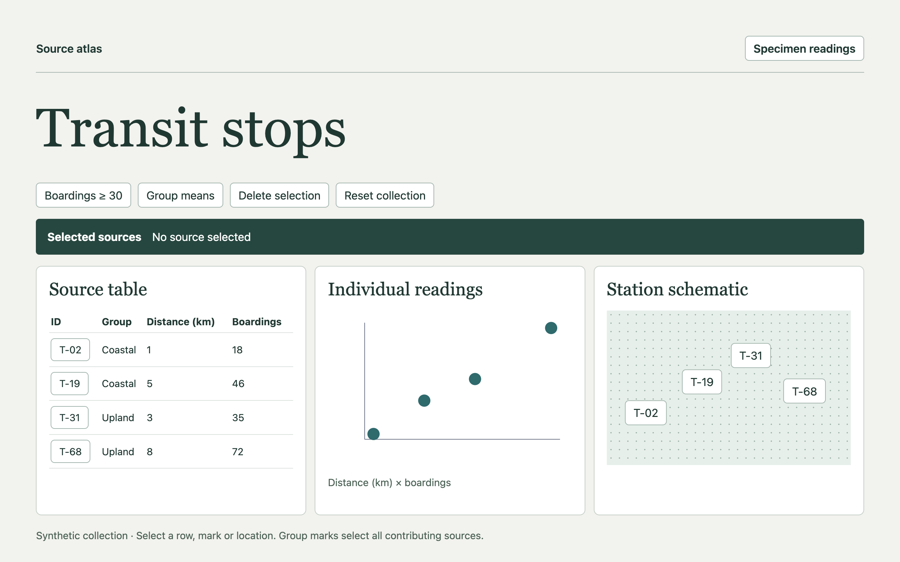
Open transit stops Action: Open transit stops Expected: The second collection maps boardings and route membership to stations.
interaction · browser · 2560 × 1600 pixels
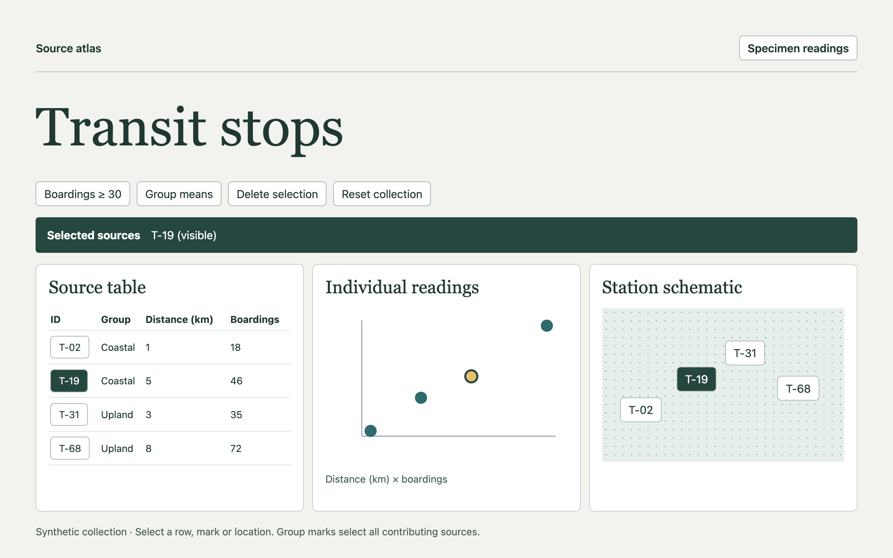
Select the T-19 boarding mark Action: Select the T-19 boarding mark Expected: The Coastal station is selected in the table and schematic.
result · browser · 2560 × 1600 pixels
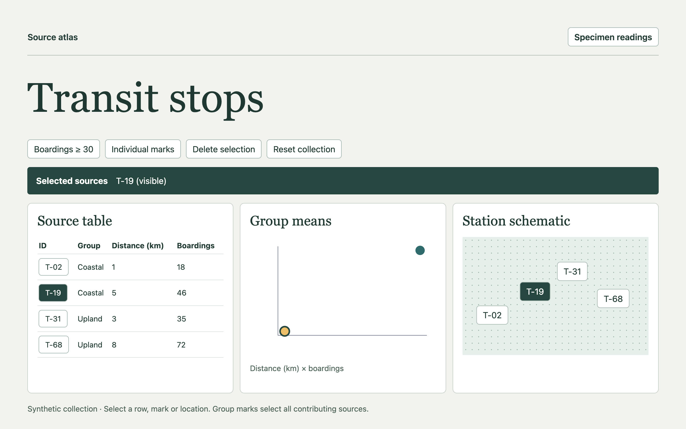
Group transit stops by route Action: Group transit stops by route Expected: The Coastal mean links T-02 and T-19.
result · browser · 2560 × 1600 pixels
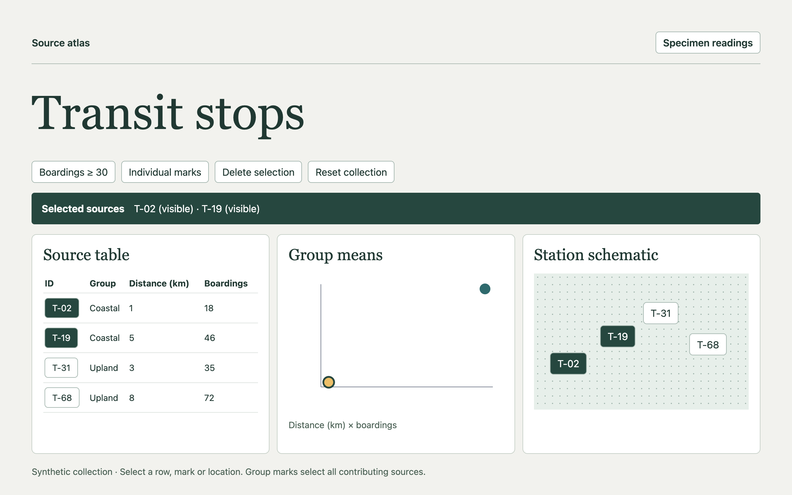
Select the Coastal mean Action: Select the Coastal mean Expected: Both Coastal stations are selected across views.
result · browser · 2560 × 1600 pixels
Contact sheetReproduce
From the repo root, follow the example README for the isolated runtime. Run PYTHONPATH=python .pixi/i18/bin/python examples/coordinated-representations/replay.py --output dist/i18-replay to replay the interactions. Run python3 artifacts/demo-slideshows/i18-coordinated-representations/build.py to build the gallery from the recorded originals.
I18 · coordinated source selections across a table, plot and canvas
Screenshots show recorded states. They do not establish latency, scientific accuracy, physical IME, screen-reader behavior, or human usability.